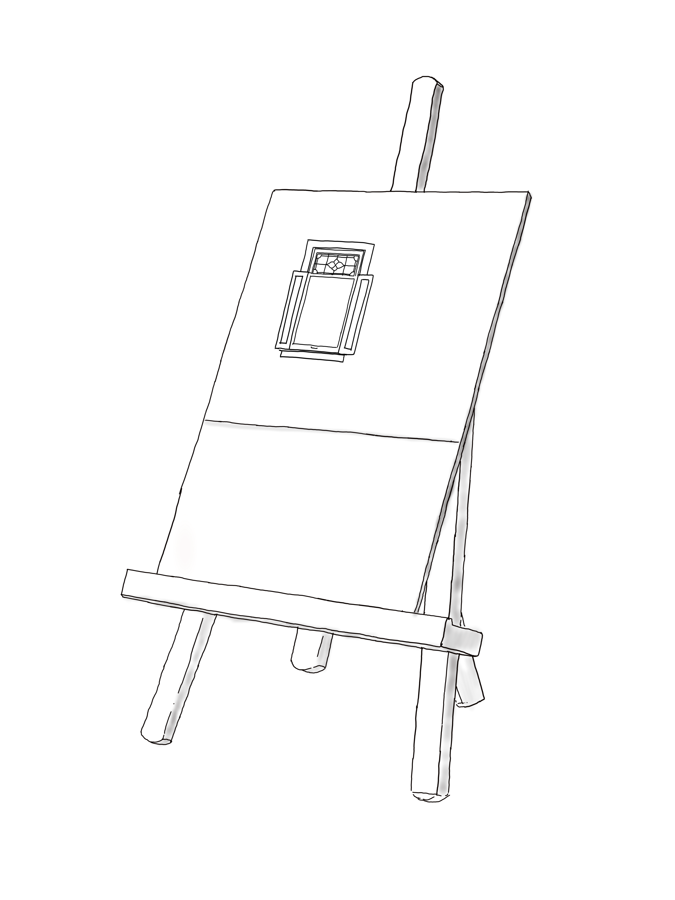

With origins in the Middle Ages and Ancient Greco-Roman art, still-life painting emerged as a distinct genre and professional specialization in Western painting by the late 16th century, and has remained significant since then.1 One advantage of the still-life artform is that it allows an artist much freedom to experiment with the arrangement of elements within a composition of a painting.2